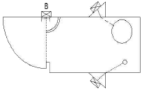
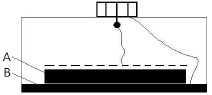
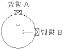

초음파비파괴검사산업기사 (2014-08-17 기출문제)
1과목: 비파괴검사 개론
1. 압력용기 등의 구조물에 대한 건전성 진단에 내압시험 중 실시되는 비파괴검사법으로 적합한 것은?
- 광탄성시험법
- 스트레인측정법
- 홀로그래피법
- 음향방출시험법
(정답률: 88%)

2. 다음 재료 중에서 침투탐상검사보다는 자분 탐상검사를 수행하는 것이 더 적절한 것은?
- 다공성의 알루미늄합금 재료
- 표면이 깨끗한 고분자 재료
- 페인트로 얇게 도장된 철강 재료
- 전기전도도가 아주 높은 구리 재료
(정답률: 81%)
3. 일반적인 강판의 결함으로 수축공, 기공 등의 내화물이 잔류하여 미압착부분이 생기는 결함은?
- 스플래쉬
- 스캐브
- 콜드셧
- 라미네이션
(정답률: 82%)
4. 물 10mL 에 침투액 50mL을 첨가한 경우 물의 함량(vol%)은 약 얼마인가?
- 9.4
- 12.7
- 16.7
- 19.4
(정답률: 66%)
5. 초음파탐상검사로 결함을 검출하는 목적에 대한 설명으로 옳은 것은?
- 초음파탐상검사에 의해 시험대상물의 제작원가를 명확하게 알기 위함이다.
- 시험대상에 따라 결함의 허용한도를 명확하게 알기 위함이다.
- 결함을 확실하게 검출할 수 있는 제조방법을 선정하기 위함이다.
- 결함은 확실하게 제거할 수 있는 비파괴검사 조건을 선정하기 위함이다.
(정답률: 64%)
6. 반도체용 재료로 가장 많이 사용되는 것은?
- Fe
- Si
- Cu
- Mg
(정답률: 85%)
7. 금속이 일정한 온도에서 전기저항이 제로(zero)가 되는 현상을 무엇이라고 하는가?
- 석출
- 열전달
- 질량효과
- 초전도
(정답률: 91%)
8. 상자성체 금속이 아닌 것은?
- Au
- Cr
- Al
- Pt
(정답률: 63%)
9. 베어링용 합금이 아닌 것은?
- 베빗메탈(Babbit metal)
- 켈밋메탈(Kelmet metal)
- 모넬메탈(Monel metal)
- 루기메탈(Lurgi metal)
(정답률: 74%)
10. 킬드강에 대한 설명으로 옳은 것은?
- 캡을 씌워 만든 강이다.
- 완전하게 탈산한 강이다.
- 탈산을 하지 않은 강이다.
- 불완전하게 탈산한 강이다.
(정답률: 84%)
11. 0.2%C강의 표준상태에서(공석점 직하) 펄라이트 양은 약 몇 %인가? (단, 공석점 0.8%C, α 최대탄소 용해한도 0.025%C 이다.)
- 10%
- 23%
- 44%
- 50%
(정답률: 77%)
12. 대표적인 시효 경화성 합금은?
- Fe-C 합금
- Cu-Zn 합금
- Cu-Sn 합금
- Al-Cu-Mg-Mn 합금
(정답률: 85%)
13. 황동의 평형상태도상에는 6개의 상이 있다. 이 중에서 α상의 결정구조는?
- 정방격자
- 면심입방격자
- 조밀육방격자
- 체심입방격자
(정답률: 65%)
14. Mg 합금의 특징으로 옳은 것은?
- 상온변형이 가능하다.
- 고온에서 비활성이다.
- 감쇠능은 주철보다 크다.
- 치수 안정성이 떨어진다.
(정답률: 73%)
15. 소성가공 방법이 아닌 것은?
- 주조
- 단조
- 압출
- 전조
(정답률: 70%)
16. 어떤 용접기의 사용률은 60%이다. 1시간 동안에 몇 분을 사용할 수 있는가?
- 24분
- 36분
- 48분
- 12분
(정답률: 76%)
17. 용접부의 풀림 처리에 대한 설명으로 올바른 것은?
- 충격저항이 감소된다.
- 경화부가 더욱 경화된다.
- 잔류응력이 감소된다.
- 취성이 생긴다.
(정답률: 74%)
18. 다음 주철의 보수 용접 방법이 아닌 것은?
- 스터드법
- 비녀장법
- 후진법
- 로킹법
(정답률: 68%)
19. 피복 아크 용접에서 아크 쏠림을 방지하는 방법이 아닌 것은?
- 엔드 탭을 사용한다.
- 아크 길이를 짧게 한다.
- 접지점을 될 수 있는 대로 용접부에서 멀리 한다.
- 직류 용접기를 사용한다.
(정답률: 55%)
20. 용입이 깊고 전극 와이어보다 앞에 입상의 용제를 산포하면서 일반적으로 아래보기용접에 적용되는 자동용접은?
- 서브머지드 아크 용접
- 일렉트로 슬래그 용접
- 플라스마 아크 용접
- 일렉트로 가스 아크 용접
(정답률: 83%)
2과목: 초음파탐상검사 원리 및 규격
21. 탐촉자의 주파수, 감도 및 분해능에 대한 설명으로 틀린 것은?
- 주파수가 높으면 감도와 분해능이 좋아진다.
- 주파수가 높아짐에 따라 감쇠가 적어 침투력이 높다.
- 음파의 파장이 짧으면 감쇠가 커져 침투력이 약하게 된다.
- 음파의 파장이 길어지면 초음파 빔의 퍼짐이 크고 감도가 저하된다.
(정답률: 49%)
22. 두께가 2cm인 청동 판재의 공진주파수는 약 얼마인가? (단, 청동 판재의 V=4.43×105cm/s 이다.)
- 0.111MHz
- 0.222MHz
- 0.443MHz
- 0.903MHz
(정답률: 73%)
23. 15mm두께의 알루미늄을 초음파탐상검사할 때, 입사면에 평행하고 깊이가 7.6mm인 결함의 탐상에 적당한 파형은?
- 종파
- Lamb 파
- 표면파
- 판파
(정답률: 78%)
24. 탐상면의 표면이 곡면일 때와 재질이 거칠 때, 반사 음압은 각각 어떻게 나타나는가?
- 작다, 작다
- 작다, 크다
- 크다, 작다
- 크다, 크다
(정답률: 71%)
25. 알루미늄에서의 초음파 속도가 6350m/s일 때, 25cm의 알루미늄을 초음파가 통과할 때 걸리는 시간은?
- 18S
- 40μs
- 4ms
- 1/4×104s
(정답률: 78%)
26. 원거리 음장영역에서 초음파 빔의 에너지 집중은?
- 빔의 폭에 비례한다.
- 빔의 중심에서 최대가 된다.
- 빔의 외곽에서 최대가 된다.
- 빔의 외곽 및 중심에서 동일하게 나타난다.
(정답률: 75%)
27. 펄스반사법에서 스크린에 나타나는 저면반사파의 소실 또는 감소의 원인에 대한 설명으로 틀린 것은?
- 결함의 방향이 표면과 여러 각도로 놓여 있을 경우
- 탐상표면이 거친 경우
- 재료의 입도가 미세한 경우
- 기공처럼 매우 작은 결함이 여러 개 존재하는 경우
(정답률: 61%)
28. 결정립이 조대한 시험편을 초음파탐상시험할 때 투과력을 높이기 위해서는 어떤 주파수를 사용하는 것이 좋은가?
- 1MHz
- 2.25MHz
- 3MHz
- 5MHz
(정답률: 70%)
29. 초음파 빔의 분산에 대한 설명 중 잘못된 것은?
- 진동자의 직경이 클수록 빔의 분산이 작아진다.
- 주파수가 클수록 빔의 분산은 커진다.
- 파장이 짧을수록 빔의 분산이 작아진다.
- 초음파의 속도가 빠를수록 빔의 분산은 커진다.
(정답률: 52%)
30. STB-A1 시험편을 사용하는 성능검사 항목이 아닌 것은?
- 분해능의 측정
- 측정법위의 조정
- 경사각 탐촉자의 굴절각 측정
- 사용 주파수 측정
(정답률: 63%)
31. 보일러 및 압력용기에 대한 초음파탐상검사(ASME Sec.V, Art.4)에서 규정하고 있는 초음파 탐상장비의 주파수 범위로 옳은 것은?
- 0.1 ∼ 0.5 MHz
- 0.5 ∼ 1 MHz
- 1 ∼ 5 MHz
- 5 ∼ 20 MHz
(정답률: 85%)
32. 초음파 탐촉자의 성능 측정 방법(KS B ⑤35)에 따라 탐촉자의 종류 · 기호가 “N5Q20A” 으로 표시되었다. 숫자 “5”는 무엇을 나타내는가?
- 주파수 대역폭
- 공칭 집속범위
- 공칭 주파수
- 진동자의 공칭치수
(정답률: 85%)
33. 강용접부의 초음파 탐상시험방법(KS B 0896)에 의하여 평판 맞대기 이음 용접부의 경사각 탐상 중 판두께가 40mm를 초과하고 60mm이하인 재료에 대한 초음파 탐상방법으로 옳은 것은?
- 굴절각 71° 를 사용하여 한면 양쪽에서 탐상한다.
- 굴절각 65° 를 사용하여 한면 양쪽에서 탐상한다.
- 굴절각 45° 를 사용하여 양면 한쪽에서 탐상한다.
- 굴절각 60° 또는 70° 를 사용하여 한면 양쪽에서 탐상한다.
(정답률: 78%)
34. 금속재료의 펄스반사법에 따른 초음파탐상 시험방법 통칙(KS B 0817)에 따른 초음파 탐상장치의 성능 점검에 해당되지 않는 것은?
- 수시 점검
- 일상 점검
- 정기 점검
- 특별 점검
(정답률: 69%)
35. 강관의 초음파 탐상검사방법(KS D 0250)에서 규정하고 있는 일반적인 요구사항으로 옳은 것은?
- 관은 검사의 유효성에 관계없이 관이 휘어 있으면 안 된다.
- 전부제조공정을 끝마친 관에 대하여 초음파 탐상검사를 실시한다.
- 검사시기에 대하여 별도 협정이 없는 경우에는 검사자가 선택한 공정으로 실시한다.
- 전부제조공정이라 함은 초음파 특성이나 관의 형상을 변화시키지 않는 공정을 말한다.
(정답률: 74%)
36. 보일러 및 압력용기의 용접부에 대한 초음파비파괴검사(ASME Sec.V, Art.4)에 따라 초음파탐상검사를 수행할 때, 탐촉자를 이동하는 속도(인치/초)는 통상 얼마를 초과해서는 안되는가?
- 4
- 6
- 8
- 10
(정답률: 66%)
37. 보일러 및 압력용기에 대한 초음파탐상검사(ASME Sec.V, Art.4)에서 탐촉자를 주사할 때, 중복주사 범위를 규정하고 있다. 중복 범위를 계산하는 기준은?
- 탐촉자의 외경
- 초음파 빔의 폭
- 압전소자의 치수
- 사용하는 쐐기의 크기
(정답률: 53%)
38. 보일러 및 압력용기에 대한 표준초음파탐상검사(ASME Sec.V, Art.23 SA-388)에 따른 시험 방법으로 옳은 것은?
- 단강품 체적의 전체 범위를 확인하기 위하여 각 패스(pass)마다 탐촉자를 15% 중첩하여 탐상한다.
- 주사속도는 250mm/s로 시행한다.
- 제조자 또는 구매자가 재시험하거나 재평가 할 때는 교정용 장비를 이용하여 탐상한다.
- 원판형 단강품은 최소한 양쪽 평면에서 경사각 70° 의 빔을 사용하여 주사한다.
(정답률: 67%)
39. 강 용접부의 초음파탐상 시험방법(KS B 0896)에 따라 T이음 및 각이음에 대하여 초음파탐상시험을 수행하고자 할때, 탠덤 탐상을 하는 면과 방향은?
- 한면 한쪽
- 한면 양쪽
- 양면 한쪽
- 양면 양쪽
(정답률: 59%)
40. 압력용기용 강판의 초음파탐상 검사방법(KS D 0233)에서 2진동자 수직탐촉자에 의한 Y주사 탐상시 결함분류와 표시기호가 옳은 것은?
- DC선 이하 : △
- DC선을 넘고 DL선 이하 : △
- DL선을 넘고 DM선 이하 : △
- DM선을 넘는 것 : △
(정답률: 67%)
3과목: 초음파탐상검사 시험
41. 그림에서 B 위치에 있는 탐촉자는 무엇을 하기 위한 목적인가?

- 굴절각의 확인
- 원거리 분해능 측정
- 감도보정
- 거리보정
(정답률: 69%)
42. 두께가 22mm인 강용접부를 굴절각 70° 인 탐촉자로 탐상한 결과, 결함에 대한 빔 진행거리가 76mm였다. 이 결함의 깊이는?
- 2mm
- 4mm
- 18mm
- 20mm
(정답률: 70%)
43. 펄스반복주파수를 높이려고 할 때 주의 깊게 고려할 사항으로 틀린 것은?
- 주사속도를 빠르게 할 수도 있다.
- 아날로그 탐상기 사용시 화면이 밝아진다.
- 고스트 에코의 발생여부에 주의하여야 한다.
- 시험주파수가 높아지므로 분해능의 향상을 기대할 수 있다.
(정답률: 59%)
44. 강판의 결함에 대한 초음파탐상시험의 설명으로 옳은 것은?
- 강판의 결함은 내부결함과 표면결함이 있으나 초음파탐상의 대상이 되는 것은 표면결함 뿐이다.
- 흠의 종류와 방향 크기를 고려하지 않아도 된다.
- 수직탐상에서는 경사각탐상과 다르게 빔 진행거리가 길어지더라도 결함에코 높이는 변하지 않는다.
- 수직탐상에서 탐상감도를 조정하는 방법은 저면에코방식과 시험편방식의 2종류가 있다.
(정답률: 80%)
45. 초음파 탐상기의 특성 중 특히 중요한 3가지는?
- 증폭의 직선성, 브라운관의 크기, 브라운관의 밝기
- 증폭의 직선성, 분해능, 시간축의 직선성
- 증폭의 직선성, 분해능, 최대감도
- 증폭의 직선성, 분해능, 브라운관의 크기
(정답률: 81%)
46. 펄스반사법에서 초음파 빔에 대한 검사체의 영향에 미치는 변수가 아닌 것은?
- 표면 거칠기
- 시험체 내의 파형변화
- 초음파 음장
- 결함의 방향과 깊이
(정답률: 51%)
47. 그림이 초음파탐촉자를 나타낸 것이다. 기호 A와 B의 명칭이 알맞게 짝지워진 것은?

- A-지연재, B-흡음재
- A-흡음재, B-보호막
- A-진동자, B-보호막
- A-흡음재, B-진동자
(정답률: 64%)
48. 판두께 12mm의 맞대기 용접부를 경사각 탐상했다. 빔거리가 50mm로 측정된 결함이 검출되었다면 이 결함은 얼마의 깊이가 있는가? (단, 사용탐촉자 시험주파수 :４MHz, 진동자 크기 : ø10mm, 공칭굴절각 : 70°, 실측굴절각 : 68°이다.
- 5.1mm
- 5.3mm
- 6.7mm
- 6.9mm
(정답률: 61%)
49. 용접부의 경사각탐상에 관한 설명으로 옳은 것은?
- 내부 용입불량과 측면 루트부의 용입불량은 결함의 크기가 같으면 에코높이는 거의 같게 된다.
- 같은 탐상면에서 탐상하면 모든 용접부의 결함은 1회 반사법보다 직사법이 에코높이가 더 높게 나타난다.
- 면상균열은 초음파가 결함에서 입사각이 변하면 에코높이는 현저하게 변화한다.
- 융합불량은 형상이 복잡하기 때문에 에코높이는 균열보다 매우 크게 나타난다.
(정답률: 53%)
50. 휴대식 장치를 이용한 펄스 반사법에서 가장 많이 사용하는 결함표시 방법은?
- A 스코프(A - scan)
- B 스코프(B - scan)
- C 스코프(C - scan)
- 자동 기록장치
(정답률: 86%)
51. 초음파탐상시험에 사용되는 탐촉자의 유효한 Q값은 어느 범위 내에 있어야 하는가?
- 1 ∼ 10
- 10 ∼ 100
- 100 ∼ 1000
- 20000이상
(정답률: 68%)
52. 펄스반사식 초음파탐상기에서 시간축을 작동시키는 장치는?
- 스윕회로
- 수신장치
- 펄스발생기
- 증폭기
(정답률: 58%)
53. 초음파 빔의 분산에 관한 설명 중 옳은 것은?
- 분산각은 빔의 파장에 반비례한다.
- 분산각은 진동자의 직경에 비례한다.
- 분산각은 초음파 주파수에 비례한다.
- 근거리 음장에서 빔의 분산은 고려하지 않는다.
(정답률: 44%)
54. 초음파탐상장치에서 동일한 결함크기에 대해서 거리에 관계없이 동일한 에코높이를 갖도록 전기적으로 보정하는 장치는?
- 동기회로
- 게이트(gate)회로
- 소인지연회로
- 거리진폭보상회로
(정답률: 80%)
55. 판재의 초음파탐상시 적산효과를 설명한 것으로 적당하지 않은 것은?
- 감쇠가 클 때 발생된다.
- 저면 반사회수가 많을 때 발생된다.
- 판 두께가 얇을 때 발생된다.
- 작은 결함 존재시 발생된다.
(정답률: 57%)
56. 초음파탐상시 시험주파수를 선정할 때 고려할 사항이 아닌 것은?
- 시험체의 경도
- 시험체의 초음파 흡수
- 시험체의 결정립 구조와 크기
- 탐상하고자 하는 최소 결함의 크기
(정답률: 70%)
57. 점집속에 사용되는 음향집속 방법이 아닌 것은?
- 구면진동자식
- 렌즈식
- 평면진동자식
- 반사식
(정답률: 70%)
58. 용접결함 중 초음파탐상시험으로 검출하기 가장 적합하지않은 것은?
- 용입 불량
- 슬래그 개재물
- 미세표면균열
- 수축공
(정답률: 73%)
59. 비파괴검사를 위한 결함과 비슷한 한 개 이상의 드릴구멍을 포함하고 있는 금속 시험편을 무엇이라 하는가?
- 세정기 시편
- 수정 조사체
- 단일평면 각도 변환기
- 대비시험편
(정답률: 93%)
60. 그림과 같은 주강품을 검사할 때 탐상방향에 관계없이 유사한 형태의 에코높이를 나타내는 결함은?

- 균열
- 개재물
- 기포
- 콜드셧(Cold shut)
(정답률: 84%)